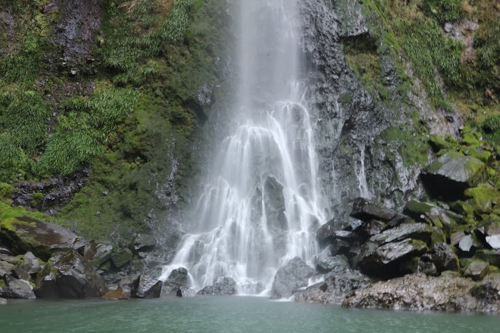
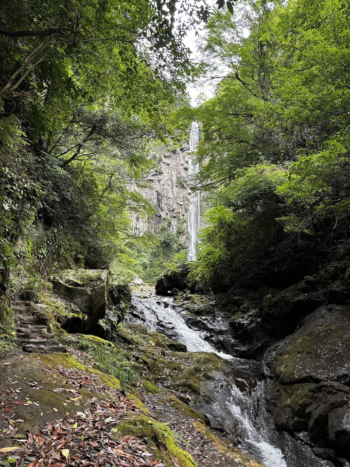
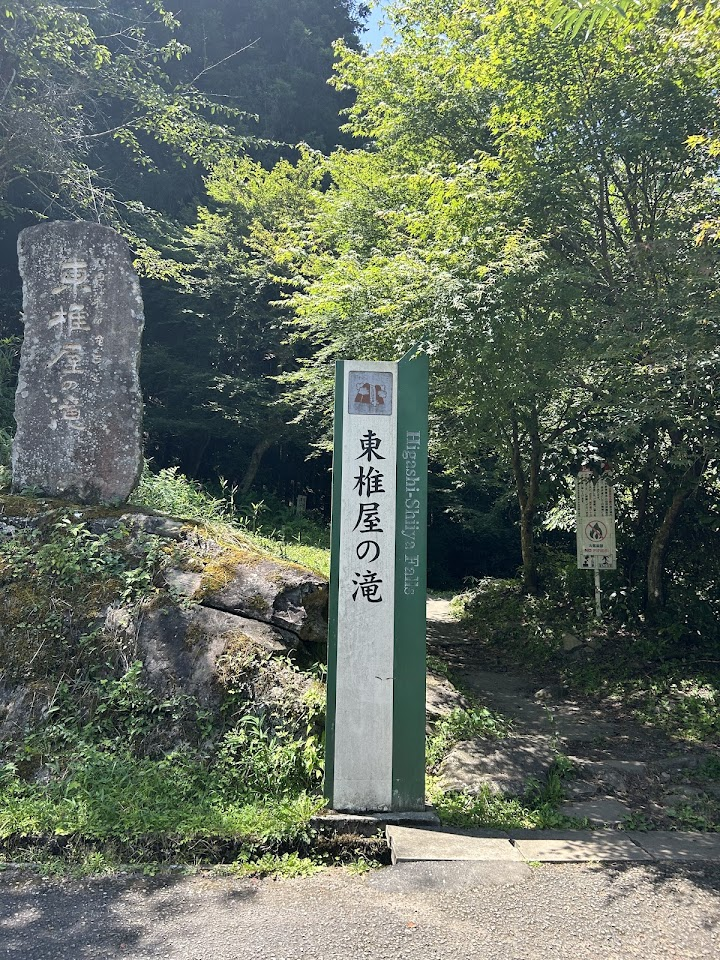
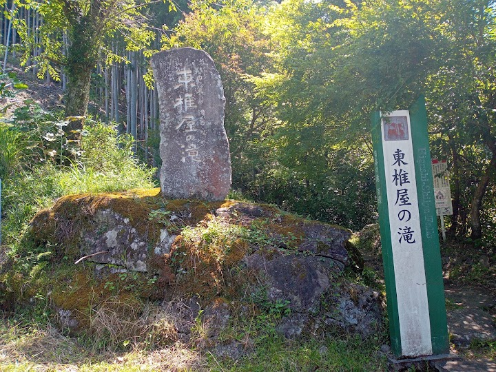
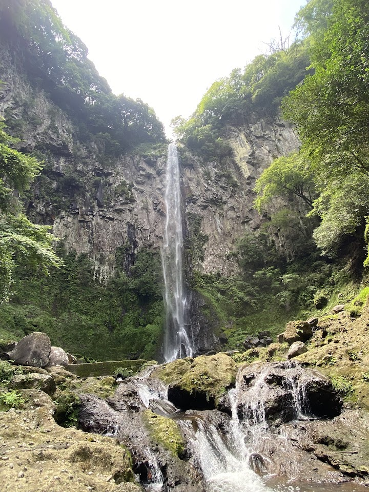

Higashi Shiiya Falls
Higashi Shiiya Falls is an 85-metre-high waterfall surrounded by cliffs in a scenic forest, with hiking trails and a place for swimming in summer. Visitors call it a power spot and note that the path is a little rough in places.
Open in Google Maps (street view, more photos and reviews there)






Visitor tips on finding it and getting there
fantastic waterfall, power spot and beautiful scenery, very refreshing in hot and humid summer days. path is a bit slippery. 300 yen for parking.
Much better than the touristy Beppu stuff. The entrance itself is a nice cave-like walk and the waterfall is enormous.
Spectacular! Tall waterfall that is accessible. If you dare to brave the cold, you can even swim in the pool. We had our lunch at the resting area / parking. Parking fee is ¥300. Beautiful cherry blossoms in the the vicinity of the waterfall. Nice! 😉